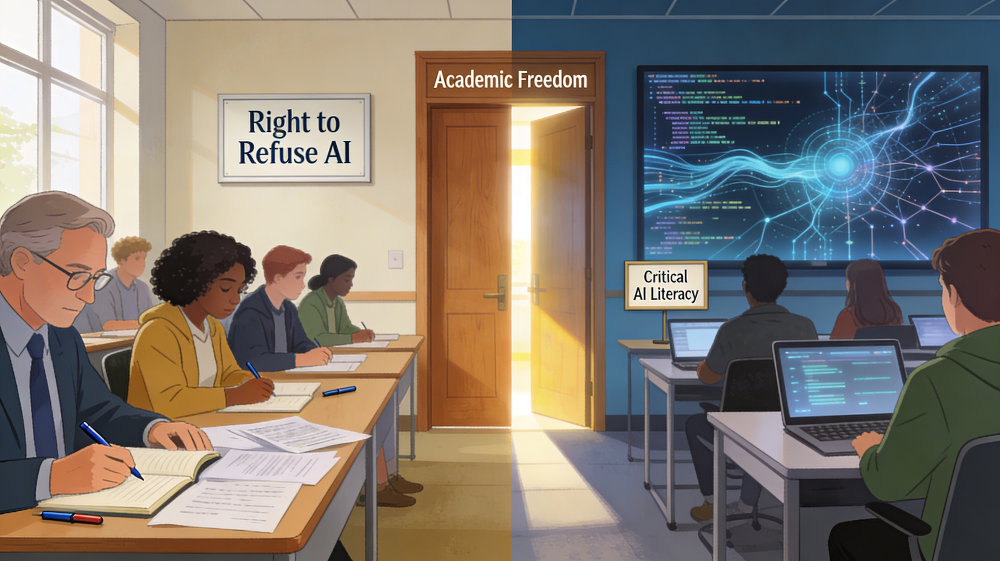
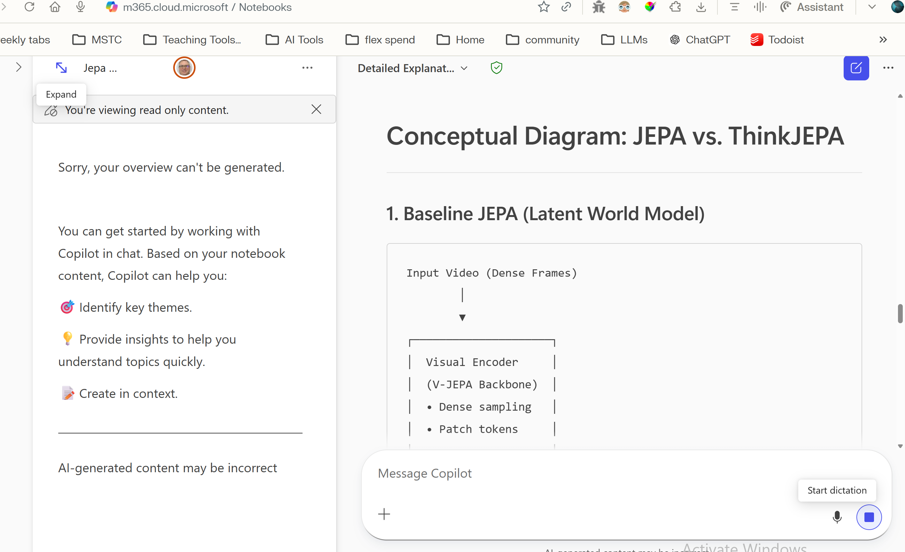

Artificial Insights
In This Issue

Senate Staff Can Now Use ChatGPT, Gemini, and Copilot with Official Data
This is one of those quiet policy shifts that matters more than it looks. Senate staff now have approval to use Microsoft Copilot, Google Gemini, and ChatGPT with official Senate data. That does not mean “AI solved government,” because obviously nothing in government is ever that tidy. But it does mean generative AI is moving from side experiment to sanctioned workflow inside a major public institution.
Adobe Firefly Is Turning into an All-in-One AI Studio

Adobe is no longer just pitching Firefly as a safe image generator. It is becoming a broad creative hub with image, video, audio, and partner models from companies like Google, OpenAI, and Runway. The bigger story here is consolidation. The AI market keeps drifting toward platforms that want to be the single front door for everything.
The White House Put National AI Policy Front and Center

The White House’s December 11, 2025 executive order, Ensuring a National Policy Framework for Artificial Intelligence, is a big deal because it tries to block a state-by-state patchwork and replace it with a lighter national framework designed to accelerate AI adoption. It also creates an AI Litigation Task Force to challenge state laws the administration sees as obstructive. This is not just another policy memo drifting through Washington. It is a serious attempt to decide who gets to set the rules for AI in the U.S., and it leans hard toward growth, preemption, and speed while doing little to protect creators’ intellectual-property interests.
Jensen Huang’s Trillion-Dollar AI Forecast Is Staggering Even by Tech Standards
NVIDIA CEO Jensen Huang says the current roughly $700 billion AI infrastructure buildout is just the start, with trillions of dollars more to come. That number is so large that most of us have a hard time wrapping our heads around it. For perspective, $1 trillion is larger than the annual GDP of most countries. One trillion seconds is about 31,000 years. Huang’s point is not subtle: AI is no longer being framed as a software wave. It is being framed as a civilization-scale infrastructure project.
The Writing Field Just Sent a Very Clear Message on AI Refusal

The Conference on College Composition and Communication approved a 2026 resolution defending the right of students and teachers to refuse generative AI in the writing classroom. Even outside English departments, this is a major announcement. The era of 'just make everyone use AI' was always a bit heavy-handed, and now one of the country’s biggest writing organizations has said so in public.

🛠️ Copilot Notebooks Are Now Generally Available for Work and School Accounts

The News: Microsoft has made the updated Copilot Notebooks experience available to Microsoft 365 users with work or school accounts. The change adds a stronger notebook model for grounded work across files, notes, PDFs, and chats. “Grounded” here means the model does not roam the open web; it works from the data you give it in one workspace, with answers tied to your sources rather than to the internet at large. It still is not NotebookLM, but it is Microsoft building a serious answer inside the ecosystem most colleges and offices already use every day.
My Take: For instructors and staff who live in Microsoft 365, this is one of the more practical upgrades from Microsoft in a while. This updated model is significantly better than what we had available before. You can pull course materials, research PDFs, meeting notes, and chats into one notebook-shaped space and ask questions about that material only. I like that these notebooks stay anchored to your files and are less prone to inventing facts. It is practical, tied to your data, and fast.

🔬 The White House Wants a National AI Rulebook. Some of It Makes Sense. Some of It Is Fantasy.
The biggest story in this issue is the Trump administration’s new national AI legislative framework. The broad goal is obvious: stop states from creating a patchwork of AI laws, push harder on infrastructure and adoption, and keep regulation light enough that the U.S. does not trip over its own shoelaces while China sprints ahead. At first glance, some of this is very reasonable. A single national approach is cleaner than fifty competing ones. Support for small business adoption, workforce training, anti-fraud enforcement, child protection, and protections against unauthorized digital replicas all belong in the conversation.
But then the policy framework swerves into an AI-policy fever dream where every hard question gets flattened into 'states are slowing innovation.' The framework argues for preempting state laws that impose 'undue burdens,' limiting state authority over AI development itself, and blocking states from penalizing developers for unlawful conduct by third parties using their models, even if the use is foreseeable. That is a huge shift of power in favor of the AI companies, and it is all dressed up as efficiency.
The intellectual property section is where things get especially messy. The framework says Congress should avoid prejudging ongoing litigation over whether training on copyrighted material is fair use, while also suggesting licensing or collective-rights approaches that could let compensation happen without immediately rewriting copyright law. The Administration states that they believe training of AI models on copyrighted material does not violate copyright law. This section reflects the fact that the AI industry wants legal certainty now, even though the courts have not finished doing their job. I'm forced to ask, 'what is the rush'?
What makes this announcement even more important is the timing. In the same month that Washington is pushing a national framework, the Senate is approving ChatGPT, Gemini, and Copilot for use with official Senate data and the Pentagon is pushing for free use of models to do nearly everything. Adding the three of these together is the real message. AI policy is no longer just about future risks, it is about normalizing AI use inside the everyday machinery of government right now. Rules are being written at the same time the tools are being learned and implemented. That combination matters a lot more than the upcoming performative hearing with five senators pretending they discovered AI last Tuesday.

🎓 Writing Faculty Push Back on Blanket AI Expectations and the Reality of AI
The CCCC (Conference on College Composition and Communication) resolution on refusing generative AI in the writing classroom is one of the most public discipline-level responses to AI usage that I've seen so far. It frames refusal in terms of academic freedom, student agency, consent, and opposition to surveillance. Howeer, the CCCC resolution is not what it pretends to be. It's their attempt at foot-dragging at a time when we are all trying to adapt to a new reality... AI is here, it is in everything, and there is no way to stop it, so we must learn to teach with it. The choice is not: Teach with AI v. Teach without AI. Students are already using AI, whether you approve or not. As a result, the choice is teach students how to ethically and responsibly use AI, or watch them use AI without direction, ethics, or responsibility. We do need to decide where AI belongs, where it does not, and what students should be allowed to use it for. However, opting out entirely is a tactic that I don't believe any of us will be able to do. We are preparing ourselves, and our students for a world that is innundated with AI.
🎓 AI Retention Systems Are Getting More Aggressive
Another higher-ed trend worth watching is the growing use of AI to flag students at risk of dropping out. Institutions such as Florida International and Georgia State University are using predictive systems to score retention risk, identify weak engagement patterns, and route students toward human intervention earlier. I love this use of AI. I think there is real promise here if the result is faster support and better advising. Often times the data can show that a student has a problem before we are aware of it ourselves. As part of this trend, gathering as much data as possible about each student is key to a prediction being accurate. The human follow-through with what we find is still the key to helping students succeed, however. Making that connection is so important.

🎬 Copilot Notebooks Feels Like Microsoft’s Best 'Grounded Work' Move Yet
I spent some time with Copilot Notebooks this week, and my reaction is basically this: it is not NotebookLM, but it is finally useful in the way Microsoft users need it to be. The strongest part is the context. You can pull together Word files, PowerPoints, PDFs, notes, and chats into one working space and keep the AI tied to that material instead of letting it wander off into nonsense. For a Microsoft-heavy environment, that matters. The new interface and promised quick-create features make it feel more like a real project workspace than a bolt-on chatbot. I still think NotebookLM is the best AI product of the past year, but if your world already lives inside Microsoft 365, this is a very solid start.


Audit Your AI Rules Before Somebody Else Writes Them for You

This week’s big theme is governance. AI is becoming normal inside government, classrooms, and productivity software at the same time that policy is still being written. So here is a five-minute thought experiment to see whether your own rules are coherent or just vibes wearing a lanyard.
The Prompt:
"List three recurring places where AI shows up in your environment right now. For each one, answer these questions:
What data is being touched & who can use the AI there?
Is human review required before the output is used?
Then look at an area where you think the policy or plan is either unclear, contradictory, or completely imaginary."
How can AI help me?
- The anti-doomscrolling AI companion that turns your screen time into self-care. https://mynomie.com/
- Privacy on your own phone: Multiverse’s CompactifAI shrinks large models (~95%) with quantum-inspired compression so capable AI can run offline on phones and tablets—faster, cheaper, less cloud. https://multiversecomputing.com/compactifai